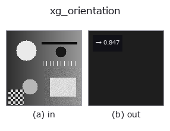

xldgeom op• Datenarten: contour → feature
• Aufruf: fullseye.apply(img, "xg_orientation", a=0.5, b=0.5) (das 2-D-Modell ist ein Bild plus zwei skalare Regler a,b∈[0,1])
• HALCON-Äquivalent: orientation_points_xld (Bedeutung und Parameter sind in der HALCON-Referenz nachzulesen)

*Die Abbildung ist die tatsächliche Ausgabe auf einer synthetischen 128×128-Eingabe. Links Eingabe, rechts Ausgabe. Punktwolken als Draufsicht-Streudiagramm (Helligkeit = z), 1-D-Reihen als Linie, Volumen als Maximum-Projektion entlang z, Videos als mittleres Bild, komplexe Bilder als Betrag; Rückgabewerte, die kein Bild ergeben, werden als Werte gezeigt.*
*Regler a ändert die Ausgabe nicht (gemessen: identisch bei 0,1 / 0,5 / 0,9).*
*Regler b ändert die Ausgabe nicht (gemessen: identisch bei 0,1 / 0,5 / 0,9).*
Stufen (die vorangehenden Ops → dieser Op, von links nach rechts):
▸ xg_orientation: stages (docs site)
Hauptachsenorientierung in Grad, auf [0,180) gefaltet und durch 180 skaliert.
> Die ausführliche Beschreibung unten ist der Originaltext — Zusammenfassung und Überschriften sind übersetzt.
Angle is measured from the +x (column) axis; multiply the result by 180 to
recover degrees. Line orientation is defined mod 180, so a line at theta and
theta+180 map to the same value.
Discontinuity (inherent, documented): a line orientation lives on a circle of
180 degrees, and this op unrolls it to [0, 1), so the wrap sits at HORIZONTAL —
a line tilted +0.001 deg returns ~0.0 while -0.001 deg returns ~0.9999. Any
single-scalar unrolling has a seam somewhere; callers that need continuity
across horizontal should compare orientations on the doubled angle
(cos 2*theta, sin 2*theta) or take the difference mod 1. The closing point of a
closed contour is not double-counted in the PCA.
• Leitfaden zur Familie gallery2d_geometry
• Katalog der Beispieldaten (Download-URLs / Lizenzen) — 2-D nutzt skimage.data (BSD/Public Domain) plus synthetische Bilder, 3-D nennt Download-URLs echter Datenquellen (Stanford, PDS, …).
• Herkunft und Literatur der Operatoren — die Quellen der Forschung/Verfahren, auf denen diese Operatorfamilie beruht.
• Der kanonische Algorithmus (Autor, Jahr) und seine Anwendungen stehen im Familienleitfaden oben.
Das Programm unten ist nachweislich lauffähig (gleiche Eingabe wie die Abbildung). In der Studio-Hilfe wird dieser Block zu Schaltflächen, die es sofort laden und ausführen.
threshold 0.50 0.50 sk_find_contours 0.50 0.50 xg_orientation 0.50 0.50
▸ Load this pipeline · Load & run
• gallery2d_geometry — py -3.11 examples/gallery2d_geometry.py
feature als Eingabe)xldgeom)xg_moments · xg_area_center · xg_eccentricity · xg_elliptic_axis · xg_height_width_ratio · xg_regress_contours · xg_clip_contours · xg_gen_polygons
*Provenance: ops.py — 2D Operator-Registry. Diese Notiz wird von tools/opdocs.py md erzeugt (nicht von Hand bearbeiten).*
© 2026 Kazufumi Furuse — Fullseye operator documentation. Licensed under Apache-2.0.
{kind=link}